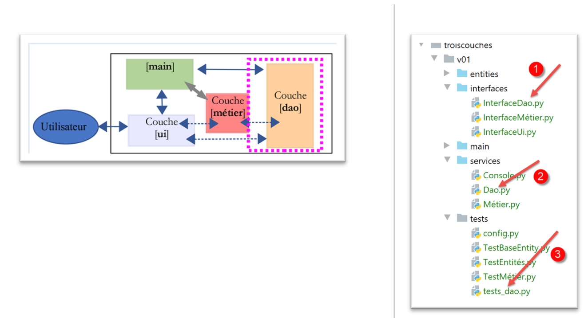
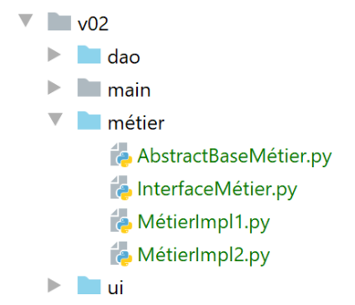
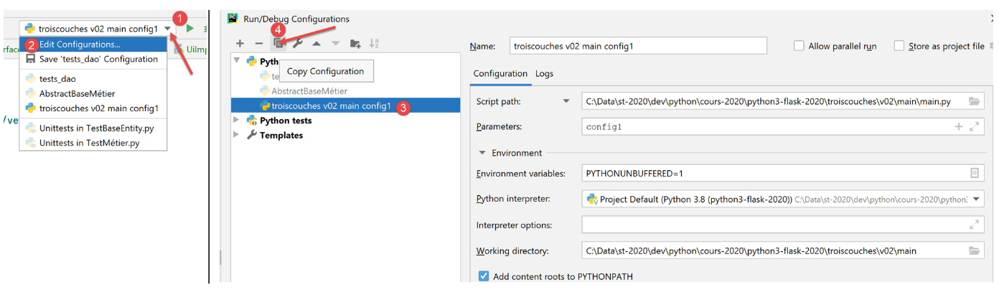

14. 分层架构与基于接口的编程
14.1. 引言
我们计划编写一个显示初中生成绩的应用程序。该应用程序可以采用多层架构：

- [ui]（用户界面）层是与应用程序用户交互的层；
- [业务]层实现应用程序的业务规则，例如计算工资或生成发票。该层通过[展示]层获取用户数据，并通过[DAO]层从DBMS（数据库管理系统）获取数据；
- [DAO]（数据访问对象）层负责管理对 DBMS（数据库管理系统）中数据的访问。
这是 |Python 2 课程| 中采用的架构。也可以引入一种变体：

与前面的分层结构相比，区别如下：
- 上文提到的名为 [main] 的主脚本负责组织各层的实例化；
- [UI、业务、DAO] 层不再必然相互通信。如果需要通信，[main] 脚本会为它们提供所需层的引用；
此处的代码被组织为若干功能区域，并由一个中央协调器管理：
- 该协调器即主脚本 [main]；
- [ui]、[dao] 和 [business] 层则是各自领域的专家中心；
我们可以将这种结构称为“管弦乐队式组织”。
14.2. 示例 1
我们将通过一个简单的控制台应用程序来说明这种分层架构：
- 该应用不涉及数据库；
- [DAO] 层将管理 Student、Class、Subject 和 Grade 实体以处理学生成绩；
- [业务]层将根据特定学生的成绩计算各项指标；
- [UI]层将是一个控制台应用程序，用于显示学生的成绩；
该应用程序的 PyCharm 项目结构如下：
注意：蓝色文件夹属于 PyCharm 项目的 [Root Sources]。
14.2.1. 应用程序的实体
我们将那些唯一作用是封装数据的类称为实体。字典也可以用于此目的。类的好处在于，它允许我们验证对象中存储数据的有效性，并提供一个方法，该方法将对象的标识符作为字符串返回。
14.2.1.1. [Class] 实体
[Class] 实体（Class.py）表示一个初中班级：
| # imports
from BaseEntity import BaseEntity
from MyException import MyException
from Utils import Utils
class Classe(BaseEntity):
# attributes excluded from class state
excluded_keys = []
# class properties
@staticmethod
def get_allowed_keys() -> list:
# id: class identifier
# name: class name
return BaseEntity.get_allowed_keys() + ["nom"]
# getter
@property
def nom(self: object) -> str:
return self.__nom
# setters
@nom.setter
def nom(self: object, nom: str):
# name must be a non-empty string
if Utils.is_string_ok(nom):
self.__nom = nom
else:
raise MyException(11, f"Le nom de la classe {self.id} doit être une chaîne de caractères non vide")
|
注释
- 第 7 行：[Class] 实体继承自 |BaseEntity 类| 一节中讨论的 [BaseEntity] 实体；
- 第 11–16 行：类由 ID 和名称（第 16 行）定义。[id] 属性由 [BaseEntity] 类提供，名称由 [Class] 类提供；
- 第 18–30 行：[name] 属性的 getter/setter 方法；
14.2.1.2. [Subject] 实体
[Subject] 类（subject.py）如下所示：
| # imports
from BaseEntity import BaseEntity
from MyException import MyException
from Utils import Utils
class Matière(BaseEntity):
# attributes excluded from class state
excluded_keys = []
# class properties
@staticmethod
def get_allowed_keys() -> list:
# id: material identifier
# name: material name
# coefficient: subject coefficient
return BaseEntity.get_allowed_keys() + ["nom", "coefficient"]
# getter
@property
def nom(self: object) -> str:
return self.__nom
@property
def coefficient(self: object) -> float:
return self.__coefficient
# setters
@nom.setter
def nom(self: object, nom: str):
# name must be a non-empty string
if Utils.is_string_ok(nom):
self.__nom = nom
else:
raise MyException(21, f"Le nom de la matière {self.id} doit être une chaîne de caractères non vide")
@coefficient.setter
def coefficient(self, coefficient: float):
# the coefficient must be a real number >=0
erreur = False
if isinstance(coefficient, (int, float)):
if coefficient >= 0:
self.__coefficient = coefficient
else:
erreur = True
else:
erreur = True
# mistake?
if erreur:
raise MyException(22, f"Le coefficient de la matière {self.nom} doit être un réel >=0")
|
注释
- 第 7 行：[Class] 类继承自 [BaseEntity] 类；
- 第 11–17 行：一个主体由其 ID [id]、名称 [name] 和权重 [coefficient] 定义；
- 第19–50行：类属性的获取器/设置器；
14.2.1.3. [Student] 实体
[Student] 类（student.py）如下所示：
| # imports
from BaseEntity import BaseEntity
from Classe import Classe
from MyException import MyException
from Utils import Utils
class Elève(BaseEntity):
# attributes excluded from class state
excluded_keys = []
# class properties
@staticmethod
def get_allowed_keys() -> list:
# id: student identifier
# name: student's name
# first name: student's first name
# class: student's class
return BaseEntity.get_allowed_keys() + ["nom", "prénom", "classe"]
# getters
@property
def nom(self: object) -> str:
return self.__nom
@property
def prénom(self: object) -> str:
return self.__prénom
@property
def classe(self: object) -> Classe:
return self.__classe
# setters
@nom.setter
def nom(self: object, nom: str) -> str:
# name must be a non-empty string
if Utils.is_string_ok(nom):
self.__nom = nom
else:
raise MyException(41, f"Le nom de l'élève {self.id} doit être une chaîne de caractères non vide")
@prénom.setter
def prénom(self: object, prénom: str) -> str:
# first name must be a non-empty string
if Utils.is_string_ok(prénom):
self.__prénom = prénom
else:
raise MyException(42, f"Le prénom de l'élève {self.id} doit être une chaîne de caractères non vide")
@classe.setter
def classe(self: object, value):
try:
# we expect a Class type
if isinstance(value, Classe):
self.__classe = value
# or a type dict
elif isinstance(value,dict):
self.__classe=Classe().fromdict(value)
# or a json type
elif isinstance(value,str):
self.__classe = Classe().fromjson(value)
except BaseException as erreur:
raise MyException(43, f"L'attribut [{value}] de l'élève {self.id} doit être de type Classe ou dict ou json. Erreur : {erreur}")
|
注释
- 第 9 行：[Student] 类继承自 [BaseEntity] 类；
- 第 13–20 行：学生通过其 ID [id]、姓氏 [lastName]、名字 [firstName] 和班级 [class] 来描述。后者是一个指向 [Class] 对象的引用；
- 第 22–65 行：类属性的 getter/setter 方法；
14.2.1.4. [Note] 实体
[Note] 类（note.py）如下所示：
| # imports
from BaseEntity import BaseEntity
from Elève import Elève
from Matière import Matière
from MyException import MyException
class Note(BaseEntity):
# attributes excluded from class state
excluded_keys = []
# class properties
@staticmethod
def get_allowed_keys() -> list:
# id: note identifier
# value: the note itself
# student: student (of type Student) concerned by the note
# subject: subject (of type Subject) concerned by the grade
# the Note object is therefore a student's grade in a subject
return BaseEntity.get_allowed_keys() + ["valeur", "élève", "matière"]
# getters
@property
def valeur(self: object) -> float:
return self.__valeur
@property
def élève(self: object) -> Elève:
return self.__élève
@property
def matière(self: object) -> Matière:
return self.__matière
# getters
@valeur.setter
def valeur(self: object, valeur: float):
# the score must be a real number between 0 and 20
if isinstance(valeur, (int, float)) and 0 <= valeur <= 20:
self.__valeur = valeur
else:
raise MyException(31,
f"L'attribut {valeur} de la note {self.id} doit être un nombre dans l'intervalle [0,20]")
@élève.setter
def élève(self: object, value):
try:
# we expect a Student type
if isinstance(value, Elève):
self.__élève = value
# or a type dict
elif isinstance(value, dict):
self.__élève = Elève().fromdict(value)
# or a json type
elif isinstance(value, str):
self.__élève = Elève().fromjson(value)
except BaseException as erreur:
raise MyException(32,
f"L'attribut [{value}] de la note {self.id} doit être de type Elève ou dict ou json. Erreur : {erreur}")
@matière.setter
def matière(self: object, value):
try:
# we expect a Material type
if isinstance(value, Matière):
self.__matière = value
# or a type dict
elif isinstance(value, dict):
self.__matière = Matière().fromdict(value)
# or a json type
elif isinstance(value, str):
self.__matière = Matière().fromjson(value)
except BaseException as erreur:
raise MyException(33,
f"L'attribut [{value}] de la note {self.id} doit être de type Matière ou dict ou json. Erreur : {erreur}")
|
注释
- 第 8 行：[Note] 类继承自 [BaseEntity] 类；
- 第 12–20 行：一个 [Note] 对象由其 ID [id]、成绩值 [value]、指向获得该成绩的学生 [student] 的引用，以及指向与该成绩相关联的科目 [subject] 的引用所定义；
- 第 22–75 行：类属性的 getter/setter 方法；
14.2.2. 应用程序配置
[config.py] 文件用于配置主脚本 [main] (1) 以及测试 (2) 的环境。 所有这些脚本的代码开头都包含 [import config] 语句。请注意，[python script] 命令所指向的脚本所在目录会自动成为 Python 路径的一部分。因此，如果 [config] 与包含 [import config] 语句的脚本位于同一目录下，系统就能找到它。在此示例中，文件 [1] 和 [2] 内容完全相同。但实际情况可能并非总是如此。
[config.sys] 文件内容如下：
| def configure():
import os
# absolute path of this script's folder
script_dir = os.path.dirname(os.path.abspath(__file__))
# root_dir
root_dir="C:/Data/st-2020/dev/python/cours-2020/python3-flask-2020/classes"
# absolute dependencies
absolute_dependencies=[
# local folders containing classes and interfaces
f"{root_dir}/02/entities",
f"{script_dir}/../entities",
f"{script_dir}/../interfaces",
f"{script_dir}/../services",
]
# update syspath
from myutils import set_syspath
set_syspath(absolute_dependencies)
# return the config
return {}
|
- 第 11–14 行：必须包含在 Python 路径（sys.path）中的目录；
- 目录 [f"{root_dir}/02/entities"] 提供了对类 [BaseEntity] 和 [MyException] 的访问；
- 文件夹 [f"{script_dir}/../entities"] 提供了对类 [Student]、[Class]、[Subject] 和 [Grade] 的访问；
- 文件夹 [f"{script_dir}/../interfaces"] 提供了对应用程序接口的访问；
- 文件夹 [f"{script_dir}/../services"] 提供了对实现这些接口的类的访问；
14.2.3. 实体测试
在此，我们将编写由名为 [unittest] 的工具执行的测试。PyCharm 自带了多个测试框架。您可以在 PyCharm 配置中选择其中之一：


14.2.3.1. [TestBaseEntity] 测试类
[TestBaseEntity] 测试脚本如下所示：
| import unittest
# configure the application
import config
config = config.configure()
class TestBaseEntity (unittest.TestCase):
def test_note1(self):
# imports
from Note import Note
from Elève import Elève
from Classe import Classe
from Matière import Matière
# construction of a note from a jSON string
note = Note().fromjson(
'{"id": 8, "valeur": 12, "élève": {"id": 42, "nom": "nom4", "prénom": "prénom4", "classe": {"id": 2, "nom": "classe2"}}, "matière": {"id": 2, "nom": "matière2", "coefficient": 2}}')
# checks
self.assertIsInstance(note, Note)
self.assertIsInstance(note.élève, Elève)
self.assertIsInstance(note.élève.classe, Classe)
self.assertIsInstance(note.matière, Matière)
def test_note2(self):
# imports
from Note import Note
from Elève import Elève
from Classe import Classe
from Matière import Matière
# building a note from a dictionary
note = Note().fromdict(
{"id": 8, "valeur": 12, "élève": {"id": 42, "nom": "nom4", "prénom": "prénom4",
"classe": {"id": 2, "nom": "classe2"}},
"matière": {"id": 2, "nom": "matière2", "coefficient": 2}})
# checks
self.assertIsInstance(note, Note)
self.assertIsInstance(note.élève, Elève)
self.assertIsInstance(note.élève.classe, Classe)
self.assertIsInstance(note.matière, Matière)
if __name__ == '__main__':
unittest.main()
|
注释
- 第 1 行：我们导入 [unittest] 模块，该模块提供了各种测试方法；
- 第 3–6 行：我们配置应用程序，以便能够找到测试所需的类；
- 第 9 行：[unittest] 测试类必须继承 [unittest.TestCase] 类；
- 第 11、27 行：测试函数的名称必须以 [test] 开头，否则将无法被识别；
- 第 13–16 行：我们导入所需的类；
- 在此测试类中，我们希望验证方法 [BaseEntity.fromdict]（第 34 行）和 [BaseEntity.fromjson]（第 18 行）的行为。类 [Note] 的属性是其他类的引用。我们需要验证前两个方法是否能创建有效的 [Note] 对象；
- 第 18 行：我们从一个 JSON 对象创建一个 [Note] 对象；
- 第 21 行：我们验证生成的对象确实是 [Note] 类型。[assertIsInstance] 方法是 [unittest.TestCase] 类的成员方法，该类是 [TestBaseEntity] 类的父类；
- 第 22 行：我们验证 [note.student] 确实是 [Student] 类型；
- 第 23 行：我们验证 [note.student.class] 确实是 [Class] 类型；
- 第 24 行：我们验证 [note.subject] 确实是 [Subject] 类型；
- 第 33–42 行：对 [BaseEntity.fromdict] 方法执行相同的验证；
有几种方法可以运行测试：
- 在 [1-2] 中，我们使用 [UnitTest] 框架运行 [TestBaseEntity]；
- 在 [3-5] 中，测试失败。[UnitTests] 表示未找到要运行的测试；
测试失败是由于 [TestBaseEntity] 代码的结构所致：
| import unittest
# configure the application
import config
config = config.configure()
class TestBaseEntity(unittest.TestCase):
|
导致 [UnitTest] 框架出现问题的原因是，在测试类定义（第 9 行）之前存在可执行代码（第 3–6 行）。
因此，我们将代码重新组织如下：
| import unittest
class TestBaseEntity(unittest.TestCase):
def setUp(self):
# configure the application
import config
config.configure()
def test_note1(self):
…
def test_note2(self):
…
if __name__ == '__main__':
unittest.main()
|
- 第 6–10 行：我们定义了一个 [setUp] 函数。该函数具有特定的作用：它会在每个测试函数（test_note1、test_note2）执行之前被调用；
完成上述操作后，执行 [TestBaseEntity] 类将产生以下结果：
这次，两个测试方法均已执行，且测试均通过。
让我们看看当测试失败时会发生什么。我们将[test_note1]中的代码修改如下：
| def test_note1(self):
# deliberate error - check that 1==2
self.assertEqual(1,2)
# imports
from Note import Note
…
|
执行结果如下：
您可以通过点击失败的测试 [2] 来查明错误原因：
另一种运行测试类的方法是在终端中运行它：
(venv) C:\Data\st-2020\dev\python\cours-2020\python3-flask-2020\troiscouches\v01\tests>python -m unittest TestBaseEntity.py
..
----------------------------------------------------------------------
Ran 2 tests in 0.026s
OK
第 6 行表明两个测试均通过（我们已修复了 1==2 的错误）；
最后，在终端中运行 [TestBaseEntity] 测试类的第三种方法如下。我们在测试类末尾添加以下第 6–7 行代码；
…
self.assertIsInstance(note.élève.classe, Classe)
self.assertIsInstance(note.matière, Matière)
if __name__ == '__main__':
unittest.main()
- 第 6 行：变量 [__name__] 是正在执行的脚本的名称。当脚本是由命令 [python script.py] 启动时，变量 [__name__] 的值为 [__main__]（标识符前后各有两个下划线）。 因此，第 7 行仅在通过 [python TestBaseEntity.py] 命令启动 [TestBaseEntity] 脚本时才会被执行。语句 [unittest.main()] 通过 [UnitTest] 框架启动脚本的执行。以下是一个示例：
(venv) C:\Data\st-2020\dev\python\cours-2020\python3-flask-2020\troiscouches\v01\tests>python TestBaseEntity.py
..
----------------------------------------------------------------------
Ran 2 tests in 0.013s
OK
14.2.3.2. [TestEntities] 测试类
[TestEntities] 测试类如下：
| import unittest
class TestEntités(unittest.TestCase):
def setUp(self):
# configure the application
import config
config.configure()
def test_code1a(self):
# imports
from Elève import Elève
from MyException import MyException
# error code
code = None
try:
# invalid id
Elève().fromdict({"id": "x", "nom": "y", "prénom": "z", "classe": "t"})
except MyException as ex:
print(f"\ncode erreur={ex.code}, message={ex}")
code = ex.code
# check
self.assertEqual(code, 1)
def test_code41(self):
# imports
from Elève import Elève
from MyException import MyException
# error code
code = None
try:
# invalid name
Elève().fromdict({"id": 1, "nom": "", "prénom": "z", "classe": "t"})
except MyException as ex:
print(f"\ncode erreur={ex.code}, message={ex}")
code = ex.code
# check
self.assertEqual(code, 41)
def test_code42(self):
# imports
from Elève import Elève
from MyException import MyException
# error code
code = None
try:
# invalid first name
Elève().fromdict({"id": 1, "nom": "y", "prénom": "", "classe": "t"})
except MyException as ex:
print(f"\ncode erreur={ex.code}, message={ex}")
code = ex.code
# check
self.assertEqual(code, 42)
def test_code43(self):
# imports
from Elève import Elève
from MyException import MyException
# error code
code = None
try:
# invalid class
Elève().fromdict({"id": 1, "nom": "y", "prénom": "z", "classe": "t"})
except MyException as ex:
print(f"\ncode erreur={ex.code}, message={ex}")
code = ex.code
# check
self.assertEqual(code, 43)
def test_code1b(self):
# imports
from Classe import Classe
from MyException import MyException
# error code
code = None
try:
# invalid identifier
Classe().fromdict({"id": "x", "nom": "y"})
except MyException as ex:
print(f"\ncode erreur={ex.code}, message={ex}")
code = ex.code
# check
self.assertEqual(code, 1)
def test_code11(self):
# imports
from Classe import Classe
from MyException import MyException
# error code
code = None
try:
# invalid name
Classe().fromdict({"id": 1, "nom": ""})
except MyException as ex:
code = ex.code
# check
self.assertEqual(code, 11)
def test_code1c(self):
# imports
from Matière import Matière
from MyException import MyException
# error code
code = None
try:
# invalid identifier
Matière().fromdict({"id": "x", "nom": "y", "coefficient": "t"})
except MyException as ex:
print(f"\ncode erreur={ex.code}, message={ex}")
code = ex.code
# check
self.assertEqual(code, 1)
def test_code21(self):
# imports
from Matière import Matière
from MyException import MyException
# error code
code = None
try:
# invalid name
Matière().fromdict({"id": "1", "nom": "", "coefficient": "t"})
except MyException as ex:
print(f"\ncode erreur={ex.code}, message={ex}")
code = ex.code
# check
self.assertEqual(code, 21)
def test_code22(self):
# imports
from Matière import Matière
from MyException import MyException
# error code
code = None
try:
# invalid coefficient
Matière().fromdict({"id": 1, "nom": "y", "coefficient": "t"})
except MyException as ex:
print(f"\ncode erreur={ex.code}, message={ex}")
code = ex.code
# check
self.assertEqual(code, 22)
def test_code1d(self):
# imports
from Note import Note
from MyException import MyException
# error code
code = None
try:
# invalid identifier
Note().fromdict({"id": "x", "valeur": "x", "élève": "y", "matière": "z"})
except MyException as ex:
print(f"\ncode erreur={ex.code}, message={ex}")
code = ex.code
# check
self.assertEqual(code, 1)
def test_code31(self):
# imports
from Note import Note
from MyException import MyException
# error code
code = None
try:
# invalid value
Note().fromdict({"id": 1, "valeur": "x", "élève": "y", "matière": "z"})
except MyException as ex:
print(f"\ncode erreur={ex.code}, message={ex}")
code = ex.code
# check
self.assertEqual(code, 31)
def test_code32(self):
# imports
from Note import Note
from MyException import MyException
# error code
code = None
try:
# disabled student
Note().fromdict({"id": 1, "valeur": 10, "élève": "y", "matière": "z"})
except MyException as ex:
print(f"\ncode erreur={ex.code}, message={ex}")
code = ex.code
# check
self.assertEqual(code, 32)
def test_code33(self):
# imports
from Elève import Elève
from Note import Note
from Classe import Classe
from MyException import MyException
# error code
code = None
try:
# invalid material
classe = Classe().fromdict({"id": 1, "nom": "x"})
élève = Elève().fromdict({"id": 1, "nom": "a", "prénom": "b", "classe": classe})
Note().fromdict({"id": 1, "valeur": 10, "élève": élève, "matière": "z"})
except MyException as ex:
print(f"\ncode erreur={ex.code}, message={ex}")
code = ex.code
# check
self.assertEqual(code, 33)
def test_exception(self):
# imports
from Elève import Elève
# the test must launch type [MyException] to succeed
from MyException import MyException
with self.assertRaises(MyException):
# the test
Elève().fromdict({"id": "x", "nom": "y", "prénom": "z", "classe": "t"})
if __name__ == '__main__':
unittest.main()
|
- 该测试脚本的目的是测试类的设置器：验证无法将错误的值赋给各个实体的属性；
- 第 11–24 行：我们测试是否无法为学生分配无效的 ID。由于我们在第 16 行将值 'x' 作为学生的 ID 传入，因此预期会引发异常。因此，我们应继续执行第 20–22 行；
- 第 21 行：显示错误消息；
- 第 22 行：获取错误代码（参见 |MyException 实体| 部分）；
- 第 24 行：我们验证（断言）错误代码为 1。此处，我们验证两点：
- 对第 24 行至第 213 行的函数重复此过程；
- 第 215–222 行：我们测试某个操作是否抛出特定类型的异常；
- 第 220 行：如果抛出了 [MyException] 类型的异常，则表示测试成功；
结果
我们运行测试脚本：
所得结果如下：
Testing started at 09:39 ...
C:\Data\st-2020\dev\python\cours-2020\python3-flask-2020\venv\Scripts\python.exe "C:\Program Files\JetBrains\PyCharm Community Edition 2020.1.2\plugins\python-ce\helpers\pycharm\_jb_unittest_runner.py" --path C:/Data/st-2020/dev/python/cours-2020/python3-flask-2020/troiscouches/v01/tests/TestEntités.py
Launching unittests with arguments python -m unittest C:/Data/st-2020/dev/python/cours-2020/python3-flask-2020/troiscouches/v01/tests/TestEntités.py in C:\Data\st-2020\dev\python\cours-2020\python3-flask-2020\troiscouches\v01\tests
code erreur=1, message=MyException[1, L'identifiant d'une entité <class 'Elève.Elève'> doit être un entier >=0]
code erreur=1, message=MyException[1, L'identifiant d'une entité <class 'Classe.Classe'> doit être un entier >=0]
code erreur=1, message=MyException[1, L'identifiant d'une entité <class 'Matière.Matière'> doit être un entier >=0]
code erreur=1, message=MyException[1, L'identifiant d'une entité <class 'Note.Note'> doit être un entier >=0]
code erreur=21, message=MyException[21, Le nom de la matière 1 doit être une chaîne de caractères non vide]
code erreur=22, message=MyException[22, Le coefficient de la matière y doit être un réel >=0]
code erreur=31, message=MyException[31, L'attribut x de la note 1 doit être un nombre dans l'intervalle [0,20]]
code erreur=32, message=MyException[32, L'attribut [y] de la note 1 doit être de type Elève ou dict ou json. Erreur : Expecting value: line 1 column 1 (char 0)]
code erreur=33, message=MyException[33, L'attribut [z] de la note 1 doit être de type Matière ou dict ou json. Erreur : Expecting value: line 1 column 1 (char 0)]
code erreur=41, message=MyException[41, Le nom de l'élève 1 doit être une chaîne de caractères non vide]
code erreur=42, message=MyException[42, Le prénom de l'élève 1 doit être une chaîne de caractères non vide]
code erreur=43, message=MyException[43, L'attribut [t] de l'élève 1 doit être de type Classe ou dict ou json. Erreur : Expecting value: line 1 column 1 (char 0)]
Ran 14 tests in 0.040s
OK
Process finished with exit code 0
此处所有测试均通过
14.2.4. [dao] 层

[dao] 层实现了 [InterfaceDao] 接口 [1]。该接口由 [Dao] 类 (2) 实现。[tests_dao] 脚本 (3) 用于测试 [dao] 层的方法。
14.2.4.1. 接口 [InterfaceDao]
接口是调用方代码与被调用方代码之间的契约。提供接口的是被调用方代码：
- 调用方代码 [1] 并不了解被调用方代码 [3] 的具体实现，它只知道如何调用它。接口 [2] 则告诉它具体该如何操作。该接口定义了一组用于与被调用方代码交互的方法/函数。该接口也被称为 API（应用程序编程接口）；
[dao] 层将提供以下接口：
- [get_classes] 返回初中课程列表；
- [get_subjects] 返回该中学开设的学科列表；
- [get_students] 返回该中学的学生列表；
- [get_grades] 返回所有学生的成绩列表；
- [get_grades_for_student_by_id] 返回特定学生的成绩；
- [get_student_by_id] 返回通过 ID 标识的学生；
调用方代码仅需使用这些方法，无需了解其具体实现方式。数据可以来自不同的来源（硬编码、数据库、文本文件等），而不会影响调用方代码。这被称为基于接口的编程。
Python 3 有一个与接口类似的概念：抽象类。我们将使用它。本示例中的接口将归类在 [interfaces] 文件夹中。
我们为 [dao] 层定义了一个抽象类 [InterfaceDao]（InterfaceDao.py）：
| # imports
from abc import ABC, abstractmethod
# dao interface
from Elève import Elève
class InterfaceDao(ABC):
# list of classes
@abstractmethod
def get_classes(self: object) -> list:
pass
# list of students
@abstractmethod
def get_élèves(self: object) -> list:
pass
# list of materials
@abstractmethod
def get_matières(self: object) -> list:
pass
# lIST OF NOTES
@abstractmethod
def get_notes(self: object) -> list:
pass
# list of student grades
@abstractmethod
def get_notes_for_élève_by_id(self: object, élève_id: int) -> list:
pass
# search for a student by id
@abstractmethod
def get_élève_by_id(self, élève_id: int) -> Elève:
pass
|
注释：
- 第 2 行：ABC = 抽象基类。我们从 [abc] 模块导入 ABC 类，以及在第 10、15、20、25、30 和 35 行使用的 [abstractmethod] 装饰器；
- 第 8 行：该抽象类名为 [InterfaceDao]，并继承自 [ABC] 类；
- 该抽象类的方法使用 [@abstractmethod] 装饰器进行装饰，这使得被装饰的方法成为抽象方法：其代码未被定义。不过，我们在此处添加了代码：[pass] 语句，该语句不执行任何操作；
- 抽象类 [InterfaceDao] 无法被实例化。只有从 [InterfaceDao] 派生且实现了 [InterfaceDao] 所有方法的类才能被实例化。 因此，如果我们创建两个从类 [InterfaceDao] 派生的类 [Dao1] 和 [Dao2]，它们都将实现 [InterfaceDao] 的抽象方法。因此可以说它们实现了接口 [InterfaceDao]；
- 同时支持接口和抽象类的语言会赋予接口与抽象类不同的角色。接口没有属性，也不能被实例化。类可以通过定义接口的所有方法来实现该接口；
14.2.4.2. [Dao] 实现
[Dao] 类（dao.py）通过以下方式实现了 [InterfaceDao] 接口：
| # import entities and interfaces
from Classe import Classe
from Elève import Elève
from InterfaceDao import InterfaceDao
from Matière import Matière
from MyException import MyException
from Note import Note
# dao] layer implements InterfaceDao interface
class Dao(InterfaceDao):
# manufacturer
# we build hard lists
def __init__(self):
# classes are instantiated
classe1 = Classe().fromdict({"id": 1, "nom": "classe1"})
classe2 = Classe().fromdict({"id": 2, "nom": "classe2"})
self.classes = [classe1, classe2]
# materials
matière1 = Matière().fromdict({"id": 1, "nom": "matière1", "coefficient": 1})
matière2 = Matière().fromdict({"id": 2, "nom": "matière2", "coefficient": 2})
self.matières = [matière1, matière2]
# students
élève11 = Elève().fromdict({"id": 11, "nom": "nom1", "prénom": "prénom1", "classe": classe1})
élève21 = Elève().fromdict({"id": 21, "nom": "nom2", "prénom": "prénom2", "classe": classe1})
élève32 = Elève().fromdict({"id": 32, "nom": "nom3", "prénom": "prénom3", "classe": classe2})
élève42 = Elève().fromdict({"id": 42, "nom": "nom4", "prénom": "prénom4", "classe": classe2})
self.élèves = [élève11, élève21, élève32, élève42]
# student grades in various subjects
note1 = Note().fromdict({"id": 1, "valeur": 10, "élève": élève11, "matière": matière1})
note2 = Note().fromdict({"id": 2, "valeur": 12, "élève": élève21, "matière": matière1})
note3 = Note().fromdict({"id": 3, "valeur": 14, "élève": élève32, "matière": matière1})
note4 = Note().fromdict({"id": 4, "valeur": 16, "élève": élève42, "matière": matière1})
note5 = Note().fromdict({"id": 5, "valeur": 6, "élève": élève11, "matière": matière2})
note6 = Note().fromdict({"id": 6, "valeur": 8, "élève": élève21, "matière": matière2})
note7 = Note().fromdict({"id": 7, "valeur": 10, "élève": élève32, "matière": matière2})
note8 = Note().fromdict({"id": 8, "valeur": 12, "élève": élève42, "matière": matière2})
self.notes = [note1, note2, note3, note4, note5, note6, note7, note8]
# -----------
# interface IDao
# -----------
|
注：
- 第 1-7 行：我们导入了实体和 [InterfaceDao] 接口；
- 第 11 行：[Dao] 类继承自抽象类 [InterfaceDao]。我们说它实现了 [InterfaceDao] 接口；
- 第 14 行：构造函数没有参数。它硬编码了四个列表：
- 第 15–18 行：类列表；
- 第 19–22 行：科目列表；
- 第 23–28 行：学生列表；
- 第 29–38 行：成绩列表；
- 第 40–44 行：实现 [Dao 接口] 的方法。这里我们不进行定义，以便观察 Python 发出的错误信息；
一个测试程序可能如下所示 [tests-dao.py]：
| # configure the application
import config
config = config.configure()
# layer instantiation [dao]
from Dao import Dao
daoImpl = Dao()
# class list
for classe in daoImpl.get_classes():
print(classe)
# list of materials
for matière in daoImpl.get_matières():
print(matière)
# class list
for élève in daoImpl.get_élèves():
print(élève)
# lIST OF NOTES
for note in daoImpl.get_notes():
print(note)
|
注意：[tests-dao.py] 脚本不是 [unittest]，因为它不包含任何名称以 [test_] 开头的方法。
注释内容不言自明。第 11–25 行使用了 [dao] 层接口。此处并未对该层的实际实现做出任何假设。在第 9 行，我们实例化了 [dao] 层。
运行此脚本的结果如下：
C:\Data\st-2020\dev\python\cours-2020\python3-flask-2020\venv\Scripts\python.exe C:/Data/st-2020/dev/python/cours-2020/python3-flask-2020/troiscouches/v01/tests/tests_dao.py
Traceback (most recent call last):
File "C:/Data/st-2020/dev/python/cours-2020/python3-flask-2020/troiscouches/v01/tests/tests_dao.py", line 9, in <module>
daoImpl = Dao()
TypeError: Can't instantiate abstract class Dao with abstract methods get_classes, get_matières, get_notes, get_notes_for_élève_by_id, get_élève_by_id, get_élèves
Process finished with exit code 1
我们可以看到，一旦 [Dao] 类被实例化（上文第 3 行），就会发生错误。Python 3 解释器提示我们无法实例化该类，因为我们尚未定义抽象方法 [get_classes, get_subjects, get_grades, get_grades_for_student_by_id, get_student_by_id, get_students]。
PyCharm 同样支持抽象类，并提供定义其方法的功能：
- 在 [1] 中，右键单击代码；
- 在 [2-3] 中，选择 [生成/实现方法] 以实现 [Dao] 类中缺失的方法；
- 在 [4] 中，选择要实现的方法——本例中为全部方法；
完成上述操作后，PyCharm 将按如下方式补全 [Dao] 类：
| # -----------
# interface IDao
# -----------
def get_classes(self: object) -> list:
pass
def get_élèves(self: object) -> list:
pass
def get_matières(self: object) -> list:
pass
def get_notes(self: object) -> list:
pass
def get_notes_for_élève_by_id(self: object, élève_id: int) -> list:
pass
def get_élève_by_id(self, élève_id: int) -> Elève:
pass
|
我们将 [Dao] 类补充如下：
| # -----------
# interface IDao
# -----------
# class list
def get_classes(self) -> list:
return self.classes
# list of materials
def get_matières(self) -> list:
return self.matières
# list of students
def get_élèves(self) -> list:
return self.élèves
# lIST OF NOTES
def get_notes(self) -> list:
return self.notes
def get_notes_for_élève_by_id(self, élève_id: int) -> dict:
# we're looking for the student
élève = self.get_élève_by_id(élève_id)
# get your notes back
notes = list(filter(lambda n: n.élève.id == élève_id, self.get_notes()))
# we return the result
return {"élève": élève, "notes": notes}
def get_élève_by_id(self, élève_id: int) -> Elève:
# filtering students
élèves = list(filter(lambda e: e.id == élève_id, self.get_élèves()))
# found?
if not élèves:
raise MyException(10, f"L'élève d'identifiant {élève_id} n'existe pas")
# result
return élèves[0]
|
- 第 5–19 行很简单；
- 第29–36行：该方法返回传入ID对应的学生。如果该学生不存在，则抛出异常；
- 第 31 行：[filter] 函数允许你过滤列表：
- 第一个参数是筛选条件；
- 第二个参数是要过滤的列表，本例中即学生列表；
- 第 31 行：列表的筛选条件通过函数 [f(e:Student) -> bool] 实现。该函数将应用于待筛选列表的每个元素。若元素满足筛选条件，则保留在筛选后的列表中；否则，将其排除。在此，我们可以：
- 指定函数 f 的名称并在其他地方实现它。此时对 [filter] 函数的调用变为 [filter(f, self.get_students)]；
- 提供函数 f 的定义。此时对 [filter] 函数的调用变为 [filter(f(e :Student){…}, self.get_students())]，其中 [e] 代表过滤后列表中的一个元素，即一名学生。本文中采用的就是这种方式。 此处函数 f 的定义为 [f(e :Student){return e.id == student_id)]：仅当学生的 ID 号 [id] 与搜索的 ID 号匹配时，才会选中该学生。此类函数可替换为所谓的 lambda 函数：[lambda e: e.id == student_id]：
- e: 代表函数 f 的参数，此处为一名学生。您可以使用任何喜欢的名称；
- e.id==student_id 是筛选条件：只有当学生 [e] 的 ID [id] 与被搜索的 ID 匹配时，才会选中该学生；
- 第 31 行：[filter] 函数返回的过滤后列表并非 [list] 类型，但可以转换为 [list] 类型。这就是我们在此处使用表达式 [list(filtered_list)] 的原因；
- 第 33–34 行：如果过滤后的列表为空，则表示所查找的学生不存在。此时将抛出异常；
- 第 36 行：若执行到此处，说明未抛出异常。此时我们可确定已获取到一个仅含 1 个元素的列表（不存在两个 [id] 编号相同的学生）。因此，我们返回该列表的第一个元素；
- 第 21–27 行：[get_notes_for_élève_by_id] 方法必须返回传入 [id] 对应学生的成绩；
- 第 22–23 行：我们首先使用 [get_student_by_id] 方法（即刚才被注释掉的那行）根据 ID [student_id] 查找学生。如果要查找的学生不存在，可能会引发异常。由于第 23 行的语句周围没有 try/catch 代码块，异常将传播到调用代码中。这是预期的行为；
- 第 24–25 行：获取学生信息后，我们检索该学生的所有成绩。我们再次使用过滤器来实现：
- 过滤器为 [filter(criterion, self_getnotes())]。因此，待过滤的列表即为该校所有学生的全部成绩列表；
- 筛选条件通过 [lambda] 函数表达：lambda n: n.student.id == student_id。参数 n 是待筛选列表中的一个元素，即一个成绩。类型 [Note] 具有 [student] 属性，该属性表示成绩所属的学生。 因此，表示该学生ID的 [n.student.id] 必须等于我们要查找的学生ID；
随后我们运行 [tests-dao.py] 脚本。
| # configure the application
import config
config = config.configure()
# layer instantiation [dao]
from Dao import Dao
daoImpl = Dao()
# class list
for classe in daoImpl.get_classes():
print(classe)
# list of materials
for matière in daoImpl.get_matières():
print(matière)
# class list
for élève in daoImpl.get_élèves():
print(élève)
# lIST OF NOTES
for note in daoImpl.get_notes():
print(note)
# a special student
print(daoImpl.get_élève_by_id(11))
# a list of his notes
dict1 = daoImpl.get_notes_for_élève_by_id(11)
print(f"élève n° 11 = {dict1['élève']}")
for note in dict1["notes"]:
print(f"note de l'élève n° 11 = {note}")
|
随后我们得到以下结果：
C:\Data\st-2020\dev\python\cours-2020\python3-flask-2020\venv\Scripts\python.exe C:/Data/st-2020/dev/python/cours-2020/python3-flask-2020/troiscouches/v01/tests/tests_dao.py
{"id": 1, "nom": "classe1"}
{"id": 2, "nom": "classe2"}
{"id": 1, "nom": "matière1", "coefficient": 1}
{"id": 2, "nom": "matière2", "coefficient": 2}
{"id": 11, "nom": "nom1", "prénom": "prénom1", "classe": {"id": 1, "nom": "classe1"}}
{"id": 21, "nom": "nom2", "prénom": "prénom2", "classe": {"id": 1, "nom": "classe1"}}
{"id": 32, "nom": "nom3", "prénom": "prénom3", "classe": {"id": 2, "nom": "classe2"}}
{"id": 42, "nom": "nom4", "prénom": "prénom4", "classe": {"id": 2, "nom": "classe2"}}
{"id": 1, "valeur": 10, "élève": {"id": 11, "nom": "nom1", "prénom": "prénom1", "classe": {"id": 1, "nom": "classe1"}}, "matière": {"id": 1, "nom": "matière1", "coefficient": 1}}
{"id": 2, "valeur": 12, "élève": {"id": 21, "nom": "nom2", "prénom": "prénom2", "classe": {"id": 1, "nom": "classe1"}}, "matière": {"id": 1, "nom": "matière1", "coefficient": 1}}
{"id": 3, "valeur": 14, "élève": {"id": 32, "nom": "nom3", "prénom": "prénom3", "classe": {"id": 2, "nom": "classe2"}}, "matière": {"id": 1, "nom": "matière1", "coefficient": 1}}
{"id": 4, "valeur": 16, "élève": {"id": 42, "nom": "nom4", "prénom": "prénom4", "classe": {"id": 2, "nom": "classe2"}}, "matière": {"id": 1, "nom": "matière1", "coefficient": 1}}
{"id": 5, "valeur": 6, "élève": {"id": 11, "nom": "nom1", "prénom": "prénom1", "classe": {"id": 1, "nom": "classe1"}}, "matière": {"id": 2, "nom": "matière2", "coefficient": 2}}
{"id": 6, "valeur": 8, "élève": {"id": 21, "nom": "nom2", "prénom": "prénom2", "classe": {"id": 1, "nom": "classe1"}}, "matière": {"id": 2, "nom": "matière2", "coefficient": 2}}
{"id": 7, "valeur": 10, "élève": {"id": 32, "nom": "nom3", "prénom": "prénom3", "classe": {"id": 2, "nom": "classe2"}}, "matière": {"id": 2, "nom": "matière2", "coefficient": 2}}
{"id": 8, "valeur": 12, "élève": {"id": 42, "nom": "nom4", "prénom": "prénom4", "classe": {"id": 2, "nom": "classe2"}}, "matière": {"id": 2, "nom": "matière2", "coefficient": 2}}
{"id": 11, "nom": "nom1", "prénom": "prénom1", "classe": {"id": 1, "nom": "classe1"}}
élève n° 11 = {"id": 11, "nom": "nom1", "prénom": "prénom1", "classe": {"id": 1, "nom": "classe1"}}
note de l'élève n° 11 = {"id": 1, "valeur": 10, "élève": {"id": 11, "nom": "nom1", "prénom": "prénom1", "classe": {"id": 1, "nom": "classe1"}}, "matière": {"id": 1, "nom": "matière1", "coefficient": 1}}
note de l'élève n° 11 = {"id": 5, "valeur": 6, "élève": {"id": 11, "nom": "nom1", "prénom": "prénom1", "classe": {"id": 1, "nom": "classe1"}}, "matière": {"id": 2, "nom": "matière2", "coefficient": 2}}
Process finished with exit code 0
请注意，在显示成绩时（其他对象的操作流程类似），我们还需：
此结果由 [BaseEntity.asdict] 函数生成（参见“链接”部分）。
14.2.5. [业务]层
- [InterfaceMétier] 是 [business] 层的接口；
- [Business] 是 [业务] 层的实现类；
- [TestBusiness] 是用于测试 [Business] 类的 [UnitTest] 类；
14.2.5.1. 接口 [BusinessInterface]
[业务]层将实现以下 [BusinessInterface] 接口（BusinessInterface.py）：
| # imports
from abc import ABC, abstractmethod
from StatsForElève import StatsForElève
# business interface
class InterfaceMétier(ABC):
# calculating statistics for a student
@abstractmethod
def get_stats_for_élève(self, idElève: int) -> StatsForElève:
pass
|
- [get_stats_for_student] 返回学生 idStudent 的成绩及其相关信息：加权平均分、最低分、最高分。这些信息封装在一个 [StudentStats] 类型的对象中；
14.2.5.2. [StatsForStudent] 实体
[StatsForStudent] 类型（StatsForStudent.py）封装了学生的统计数据（成绩、最低分、最高分、加权平均分），具体定义如下：
| # imports
from BaseEntity import BaseEntity
# individual student statistics
class StatsForElève(BaseEntity):
# attributes excluded from class state
excluded_keys = []
# class properties
@staticmethod
def get_allowed_keys() -> list:
# id: note identifier
# pupil: the pupil concerned
# notes: his notes
# moyennePondérée: average weighted by subject coefficients
# min: its minimum score
# max: its maximum rating
return BaseEntity.get_allowed_keys() + ["élève", "notes", "moyenne_pondérée", "min", "max"]
# toString
def __str__(self) -> str:
# students without grades
if len(self.notes) == 0:
return f"Elève={self.élève}, notes=[]"
# student with grades
str = ""
for note in self.notes:
str += f"{note.valeur} "
return f"Elève={self.élève}, notes=[{str.strip()}], max={self.max}, min={self.min}, " \
f"moyenne pondérée={self.moyenne_pondérée:4.2f}"
|
注：
- 第 8 行：[StatsForStudent] 类继承自 [BaseEntity] 类；
- 第 13–22 行：类属性；
- 来自 [BaseEntity] 的标识符 [id]；
- 学生 [student]，其统计数据被封装其中；
- 其成绩 [grades]；
- 其加权平均分 [weighted_average]；
- 其最低成绩 [min]；
- 其最高成绩 [max]；
- 我们不为这些属性定义获取器/设置器。我们假设 [业务] 层会创建此类对象，且不会创建无效对象；
- 第 23–33 行：[__str__] 函数返回一个包含对象属性的字符串；
14.2.5.3. [Business] 实现
[BusinessInterface] 接口的 [Business] 实现（Metier.py）如下：
| # imports
from InterfaceDao import InterfaceDao
from InterfaceMétier import InterfaceMétier
from StatsForElève import StatsForElève
class Métier(InterfaceMétier):
# manufacturer
def __init__(self, dao: InterfaceDao):
# the parameter
self.__dao = dao
# -----------
# interface
# -----------
# indicators on a particular student's grades
def get_stats_for_élève(self, id_élève: int) -> StatsForElève:
# Stats for student no. idEleve
# id_élève : pupil number
# retrieve notes with the [dao] layer
notes_élève = self.__dao.get_notes_for_élève_by_id(id_élève)
élève = notes_élève["élève"]
notes = notes_élève["notes"]
# we stop if there are no notes
if len(notes) == 0:
# we return the result
return StatsForElève().fromdict({"élève": élève, "notes": []})
# use of student notes
somme_pondérée = 0
somme_coeff = 0
max = -1
min = 21
for note in notes:
# nOTE VALUE
valeur = note.valeur
# material coefficient
coeff = note.matière.coefficient
# sum of coefficients
somme_coeff += coeff
# weighted sum
somme_pondérée += valeur * coeff
# search for min
if valeur < min:
min = valeur
# search for the max
if valeur > max:
max = valeur
# calculation of missing indicators
moyenne_pondérée = float(somme_pondérée) / somme_coeff
# the result is returned as type [StatsForElève]
return StatsForElève(). \
fromdict({"élève": élève, "notes": notes,
"moyenne_pondérée": moyenne_pondérée,
"min": min, "max": max})
|
注释
- 第 7 行：[Métier] 类继承自 [InterfaceMétier] 类。通常说它实现了 [InterfaceMétier] 接口；
- 第 9–12 行：构造函数接受一个参数，即对 [dao] 层的引用。请注意第 10 行中，我们为 [dao] 参数指定了 [InterfaceDao] 类型。 我们并不期待具体的实现，而仅仅是遵循 [DaoInterface] 接口的实现。在此处，这并不重要，因为 Python 不会考虑该类型，但使用接口而非具体实现是一种良好的编程习惯。这样代码就更容易修改；
- 第 19–60 行：实现 [get_stats_for_élève] 方法；
- 第 19 行：该方法接收一个参数，即我们要获取统计信息的学生的 [idElève]；
- 第 24 行：向 [dao] 层请求学生的成绩。若学生不存在，此请求将引发异常。该异常未被处理（未使用 try/catch），因此会回传至调用代码；
- 第 25 行：若未发生异常，则到达此处。[student_grades] 此时是一个包含两个键 [student, grade] 的字典：
- 第 25 行：我们检索该学生的信息（姓名、班级等）；
- 第 26 行：我们获取该学生的成绩；
- 第 28–31 行：检查学生是否有成绩。若无成绩，则无统计数据可计算；
- 第 31 行：我们通过 [BaseEntity.fromdict] 方法从字典中构建 [StatsForStudent] 对象并返回；
- 第 33–54 行：使用学生的成绩计算所需的统计数据。代码注释应足以说明；
- 第 56–60 行：我们通过 [BaseEntity.fromdict] 方法，从字典中构建并返回一个 [StatsForStudent] 对象；
14.2.5.4. 测试 [business] 层
针对 [business] 层的 [UnitTest] 脚本可能如下所示（TestMétier.py）：
| # imports
import unittest
class Testmétier(unittest.TestCase):
def setUp(self):
# configure the application
import config
config.configure()
def test_statsForEleve11(self):
# imports
from Dao import Dao
from Métier import Métier
# student indicators are tested 11
dao = Dao()
stats_for_élève = Métier(dao).get_stats_for_élève(11)
# display
print(f"\nstats={stats_for_élève}")
# checks
self.assertEqual(stats_for_élève.min, 6)
self.assertEqual(stats_for_élève.max, 10)
self.assertAlmostEqual(stats_for_élève.moyenne_pondérée, 7.333, delta=1e-3)
if __name__ == '__main__':
unittest.main()
|
注释
- 第 6–9 行：此处使用 [setUp] 函数来配置测试的 Python 路径；
- 第 16 行：我们实例化 [dao] 层；
- 第 17 行：我们实例化 [business] 层，并使用其 [get_stats_for_student] 方法计算学生 #11 的统计数据；
- 第 19 行：显示生成的 [StatsForStudent]。由于 [StatsForStudent] 继承自 [BaseEntity]，因此此处显示的是 [StatsForStudent] 的 JSON 字符串；
- 第 21 行：我们检查该学生的最低成绩；
- 第 22 行：我们检查该学生的最高成绩；
- 第 23 行：验证加权平均分为 7.333，精确到 10⁻³。通常情况下，无法精确比较实数，因为在内部，它们通常仅以近似值表示；
测试结果如下：
Testing started at 18:17 ...
C:\Data\st-2020\dev\python\cours-2020\python3-flask-2020\venv\Scripts\python.exe "C:\Program Files\JetBrains\PyCharm Community Edition 2020.1.2\plugins\python-ce\helpers\pycharm\_jb_unittest_runner.py" --path C:/Data/st-2020/dev/python/cours-2020/python3-flask-2020/troiscouches/v01/tests/TestMétier.py
Launching unittests with arguments python -m unittest C:/Data/st-2020/dev/python/cours-2020/python3-flask-2020/troiscouches/v01/tests/TestMétier.py in C:\Data\st-2020\dev\python\cours-2020\python3-flask-2020\troiscouches\v01\tests
Ran 1 test in 0.015s
OK
stats=Elève={"id": 11, "nom": "nom1", "prénom": "prénom1", "classe": {"id": 1, "nom": "classe1"}}, notes=[10 6], max=10, min=6, moyenne pondérée=7.33
Process finished with exit code 0
14.2.6. [ui] 层

- 在 [1] 中，[ui] 层的接口；
- 在 [2] 中，该接口的实现；
- 在 [3] 中，应用程序的主脚本；
14.2.6.1. 接口 [InterfaceUi]
[UI]层的接口如下：
| # imports
from abc import ABC, abstractmethod
# interface UI
class InterfaceUi(ABC):
# execute UI layer
@abstractmethod
def run(self: object):
pass
|
注释
- 第 9-10 行：[UI] 层将仅包含一个方法，即 [run]；
14.2.6.2. [Console] 的实现
[Console] 层由以下 [Console.py] 脚本实现：
| # layer imports
from InterfaceDao import InterfaceDao
from InterfaceMétier import InterfaceMétier
from InterfaceUi import InterfaceUi
# other dependencies
from MyException import MyException
class Console(InterfaceUi):
# manufacturer
def __init__(self: object, métier: InterfaceMétier):
# business: the [business] layer
# attributes are memorized
self.métier = métier
# -----------
# interface
# -----------
def run(self):
# user dialog
fini = False
while not fini:
# question/answer
réponse = input("Numéro de l'élève (>=1 et * pour arrêter) : ").strip()
# finished?
if réponse == "*":
break
# is the input correct?
ok = False
try:
id_élève = int(réponse, 10)
ok = id_élève >= 1
except ValueError as erreur:
pass
# correct data?
if not ok:
print("Saisie incorrecte. Recommencez...")
continue
# calculation of statistics for the selected student
try:
print(self.métier.get_stats_for_élève(id_élève))
except MyException as erreur:
print(f"L'erreur suivante s'est produite : {erreur}")
|
- 第 3-5 行：导入所有接口；
- 第 11 行：[Console] 类实现了 [InterfaceUi] 接口；
- 第 12-17 行：[Console] 类的构造函数接收一个指向 [business] 层的引用作为参数。请注意，我们为该参数指定了 [BusinessInterface] 类型，以强调我们正在处理的是接口而非具体的实现；
- 第 24 行：实现接口的 [run] 方法；
- 第 27 行：一个循环，当第 31 行的条件满足时停止；
- 第 29 行：输入键盘输入的数据。[input] 函数接收一个可选参数：要在屏幕上显示的请求输入的消息。此输入始终以字符串形式获取。[strip] 函数会从字符串中移除任何前导或尾随的空格；
- 第 34–39 行：我们验证输入（学生 ID）是否有效。它必须是一个大于等于 1 的整数。请注意，该输入是以字符串形式输入的；
- 第 36 行：我们尝试将输入转换为十进制整数。如果无法转换，[int] 函数会引发异常；
- 第 37 行：只有在未发生异常的情况下才会执行此处代码。我们验证获取到的整数是否确实 >= 1；
- 第 38–39 行：我们处理异常。如果发生了异常，第 34 行中的 [ok] 变量将保持为 [False]；
- 第 41–43 行：若输入不正确，则显示错误信息并重启循环（第 43 行）；
- 第 45–48 行：计算输入 ID 对应学生的统计数据；
- 第 46 行：调用了来自 [business] 层的 [get_stats_for_student] 方法。如果该学生不存在，该方法会抛出异常。第 47–48 行处理了此异常。我们知道 [DAO] 和 [business] 层会抛出 [MyException] 异常；
14.3. 主脚本 [main]
主脚本 [main] 如下所示（main.py）：
| # configure the application
import config
config = config.configure()
# syspath is configured - imports can be made
from Console import Console
from Dao import Dao
from Métier import Métier
# ----------- layer [console]
try:
# layer instantiation [dao]
dao = Dao()
# instantiation layer [business]
métier = Métier(dao)
# instantiation layer [ui]
console = Console(métier)
# layer execution [console]
console.run()
except BaseException as ex:
# error is displayed
print(f"L'erreur suivante s'est produite : {ex}")
finally:
pass
|
- 第 1–4 行：配置应用程序的 Python 路径；
- 第 6–9 行：导入所需的类和接口；
- 第 14 行：实例化 [DAO] 层；
- 第 16 行：实例化 [business] 层；
- 第 18 行：实例化 [ui] 层；
- 第 20 行：初始化用户界面；
- 第 13–20 行：通常情况下，这些行不会抛出异常。任何从 [DAO] 和 [business] 层传播过来的异常都会被 [Console] 层捕获。当你不完全理解所使用的各层时（本例中并非如此），异常处理是一门高深的学问。 如有疑虑，可添加代码以捕获执行代码可能抛出的任何类型的异常。此处第21–23行即采用了这种做法。我们捕获所有继承自[BaseException]的异常，即所有异常；
- 第 24–25 行：这里的 [finally] 子句不执行任何操作。它仅用于允许注释掉第 21–23 行。事实上，在调试模式下，不建议捕获异常。 在这种情况下，Python 解释器会捕获这些异常，并报告异常发生的行号。这是至关重要的信息。当第 21–23 行被注释掉时，第 24–25 行的存在确保了 try/catch 代码块在语法上正确。如果没有它们，Python 会引发错误；
以下是一个执行示例：
C:\Data\st-2020\dev\python\cours-2020\python3-flask-2020\venv\Scripts\python.exe C:/Data/st-2020/dev/python/cours-2020/python3-flask-2020/troiscouches/v01/main/main.py
Numéro de l'élève (>=1 et * pour arrêter) : 11
Elève={"id": 11, "nom": "nom1", "prénom": "prénom1", "classe": {"id": 1, "nom": "classe1"}}, notes=[10 6], max=10, min=6, moyenne pondérée=7.33
Numéro de l'élève (>=1 et * pour arrêter) : 1
L'erreur suivante s'est produite : MyException[10, L'élève d'identifiant 1 n'existe pas]
Numéro de l'élève (>=1 et * pour arrêter) : *
Process finished with exit code 0
14.4. 示例 2
这个关于分层架构的新示例旨在展示基于接口编程的优势。这种方法有助于应用程序的维护和测试。我们将再次采用三层架构：

每一层都将采用两种不同的实现方式。我们希望展示：更改某一层级的实现方式时，对其他层级的影响可以降至最低。
14.4.1. [dao] 层

[InterfaceDao] 接口如下：
| # imports
from abc import ABC, abstractmethod
# dao interface
class InterfaceDao(ABC):
# a single method
@abstractmethod
def do_something_in_dao_layer(self, x: int, y: int) -> int:
pass
|
- 第 8–10 行：方法 [do_something_in_dao_layer] 是该接口的唯一方法；
[DaoImpl1] 类如下所示实现了 [InterfaceDao] 接口：
| from InterfaceDao import InterfaceDao
class DaoImpl1(InterfaceDao):
# implementation InterfaceDao
def do_something_in_dao_layer(self: InterfaceDao, x: int, y: int) -> int:
return x + y
|
[DaoImpl2] 类如下所示实现了 [InterfaceDao] 接口：
| from InterfaceDao import InterfaceDao
class DaoImpl2(InterfaceDao):
# implementation InterfaceDao
def do_something_in_dao_layer(self: InterfaceDao, x: int, y: int) -> int:
return x - y
|
14.4.2. [业务]层

[BusinessInterface] 接口如下：
| # imports
from abc import ABC, abstractmethod
# business interface
class InterfaceMétier(ABC):
# a single method
@abstractmethod
def do_something_in_métier_layer(self, x: int, y: int) -> int:
pass
|
- 第 8–10 行：接口中仅包含 [do_something_in_business_layer] 这一方法；
[AbstractBaseMétier] 类如下所示实现了 [InterfaceMétier] 接口：
| # imports
from abc import ABC, abstractmethod
from InterfaceDao import InterfaceDao
from InterfaceMétier import InterfaceMétier
class AbstractBaseMétier(InterfaceMétier, ABC):
# properties
# __dao is a reference to the [dao] layer
@property
def dao(self) -> InterfaceDao:
return self.__dao
@dao.setter
def dao(self, dao: InterfaceDao):
self.__dao = dao
# interface implementation [InterfaceMétier]
@abstractmethod
def do_something_in_métier_layer(self, x: int, y: int) -> int:
pass
|
- 第 8 行：[AbstractBaseMétier] 类派生出两个类：
- [BusinessInterface]：类 [AbstractBusinessBase] 在第 19–22 行实现了该接口。实际上，我们可以看到它并未实现方法 [do_something_in_business_layer]，该方法已被声明为抽象方法（第 20 行）。该方法的实现将由派生类负责；
- [ABC] 用于访问 [@abstractmethod] 注解；
- 顺序很重要：如果在此处颠倒顺序，Python 会引发运行时错误；
这是我们首次使用多重继承（从多个类继承）。[AbstractBaseMétier] 类同时继承了 [InterfaceMétier] 和 [ABC] 类的属性。
- 第 9–17 行：我们定义了 [dao] 属性，它将作为指向 [dao] 层的引用；
接口的目的是为了被实现。当不同的实现共享属性时，将这些属性放在父类中以避免重复是非常有用的。这里的 [dao] 属性就是这种情况。父类通常总是抽象的，因为它并未实现接口中的所有方法。
[BusinessImpl1] 类通过以下方式实现了 [BusinessInterface] 接口：
| from AbstractBaseMétier import AbstractBaseMétier
class MétierImpl1(AbstractBaseMétier):
# interface implementation [InterfaceMétier]
def do_something_in_métier_layer(self:AbstractBaseMétier, x: int, y: int) -> int:
x += 1
y += 1
return self.dao.do_something_in_dao_layer(x, y)
|
- 第 4 行：类 [BusinessImpl1] 继承自类 [AbstractBusinessBase]。因此，它从该类继承了 [dao] 属性；
- 第 6–9 行：实现了父类 [AbstractBusinessBase] 未实现的 [BusinessInterface] 接口；
- 第 9 行：使用了 [dao] 层；
类 [BusinessImpl2] 以类似的方式实现了 [BusinessInterface] 接口：
| from AbstractBaseMétier import AbstractBaseMétier
class MétierImpl2(AbstractBaseMétier):
# interface implementation [InterfaceMétier]
def do_something_in_métier_layer(self:AbstractBaseMétier, x: int, y: int) -> int:
x -= 1
y -= 1
return self.dao.do_something_in_dao_layer(x, y)
|
14.4.3. [ui] 层

[InterfaceUi] 接口如下：
| # imports
from abc import ABC, abstractmethod
# ui interface
class InterfaceUi(ABC):
# a single method
@abstractmethod
def do_something_in_ui_layer(self, x: int, y: int) -> int:
pass
|
[AbstractBaseUi] 类如下所示实现了 [InterfaceUi] 接口：
| # imports
from abc import ABC, abstractmethod
from InterfaceMétier import InterfaceMétier
from InterfaceUi import InterfaceUi
class AbstractBaseUi(InterfaceUi, ABC):
# properties
# business is a reference to the [business] layer
@property
def métier(self) -> InterfaceMétier:
return self.__métier
@métier.setter
def métier(self, métier: InterfaceMétier):
self.__métier = métier
# interface implementation [InterfaceUI]
@abstractmethod
def do_something_in_ui_layer(self: InterfaceUi, x: int, y: int) -> int:
pass
|
- [AbstractBaseUi] 类是一个抽象类（第 20 行）。若要实现 [InterfaceUi] 接口，必须继承自该类；
- 第 9–17 行：[AbstractBaseUi] 类包含对 [business] 层的引用；
实现类 [UiImpl1] 如下所示：
| from AbstractBaseUi import AbstractBaseUi
class UiImpl1(AbstractBaseUi):
# interface implementation [InterfaceUi]
def do_something_in_ui_layer(self: AbstractBaseUi, x: int, y: int) -> int:
x += 1
y += 1
return self.métier.do_something_in_métier_layer(x, y)
|
- 第 4 行：类 [UiImpl1] 继承自类 [AbstractBaseUi]，因此继承了其 [business] 属性。该属性在第 9 行被调用；
实现类 [UiImpl2] 类似：
| from AbstractBaseUi import AbstractBaseUi
class UiImpl2(AbstractBaseUi):
# interface implementation [InterfaceUi]
def do_something_in_ui_layer(self: AbstractBaseUi, x: int, y: int) -> int:
x -= 1
y -= 1
return self.métier.do_something_in_métier_layer(x, y)
|
- 第 4 行：类 [UiImpl2] 继承自类 [AbstractBaseUi]，因此继承了其 [business] 属性。该属性在第 9 行被使用；
14.4.4. 配置文件

- [config1, config2] 文件以两种不同的方式配置应用程序；
- [main] 文件是应用程序的主脚本；
[config1] 文件内容如下：
| def configure():
# step 1 ------
# absolute path of this script's folder
import os
script_dir = os.path.dirname(os.path.abspath(__file__))
# dependencies
absolute_dependencies = [
# local Python Path folders
f"{script_dir}/../dao",
f"{script_dir}/../ui",
f"{script_dir}/../métier",
]
# configure the syspath
from myutils import set_syspath
set_syspath(absolute_dependencies)
# step 2 ------
# application layer configuration
from DaoImpl1 import DaoImpl1
from MétierImpl1 import MétierImpl1
from UiImpl1 import UiImpl1
# layer instantiation
# dao
dao = DaoImpl1()
# business
métier = MétierImpl1()
métier.dao = dao
# ui
ui = UiImpl1()
ui.métier = métier
# put the layer instances in the config
# only the ui layer is required here
config = {"ui": ui}
# return the config
return config
|
- 第 2–16 行：配置应用程序的 Python 路径；
- 第 18–31 行：实例化 [DAO、业务、UI] 层。为实现其接口，我们每次都选择首个已构建的实现；
- 第 33–35 行：我们将层引用添加到配置中。在此处，主脚本仅需 [ui] 层；
[config2] 文件与此类似，但使用第二个可用的实现来实现每个接口：
| def configure():
# step 1 ---
# absolute path of this script's folder
import os
script_dir = os.path.dirname(os.path.abspath(__file__))
# dependencies
absolute_dependencies = [
# local Python Path folders
f"{script_dir}/../dao",
f"{script_dir}/../ui",
f"{script_dir}/../métier",
]
# configure the syspath
from myutils import set_syspath
set_syspath(absolute_dependencies)
# step 2 ------
# application layer configuration
from DaoImpl2 import DaoImpl2
from MétierImpl2 import MétierImpl2
from UiImpl2 import UiImpl2
# layer instantiation
# dao
dao = DaoImpl2()
# business
métier = MétierImpl2()
métier.dao = dao
# ui
ui = UiImpl2()
ui.métier = métier
# put the layer instances in the config
# only the ui layer is required here
config = {"ui": ui}
# return the config
return config
|
14.4.5. 主脚本 [main]
主脚本如下：
| # imports
import importlib
import sys
# hand ---------
# you need two arguments
nb_args = len(sys.argv)
if nb_args != 2 or (sys.argv[1] != "config1" and sys.argv[1] != "config2"):
print(f"Syntaxe : {sys.argv[0]} config1 ou config2")
sys.exit()
# application configuration
module = importlib.import_module(sys.argv[1])
config = module.configure()
# execution of the [ui] layer
print(config["ui"].do_something_in_ui_layer(10, 20))
|
此脚本接受一个参数：
- [config1] 用于使用配置 #1；
- [config2] 用于使用配置 #2；
Python 将参数存储在列表 [sys.argv] 中：
- sys.argv[0] 是脚本的名称，此处为 [main]。该参数始终存在；
- sys.argv[1] 是传递给脚本的第一个参数，sys.argv[2] 是第二个，……
- 第 8 行：我们获取参数的数量；
- 第 9–11 行：我们检查是否确实存在参数，且其值为 [config1] 或 [config2]。若非如此，则显示错误信息（第 10 行）并退出程序（第 11 行）；
一旦确定了所需的配置，我们就需要执行该配置。例如，如果选择了配置 1，我们需要执行以下代码：
| import config1
config1.configure()
|
这里的问题在于，要使用的配置存储在一个变量中，即 [sys.argv[1]。要导入一个名称存储在变量中的模块，我们需要使用 [importlib] 包（第 2 行）。
- 第 14 行：我们导入名称存储在 [sys.argv[1]] 中的模块
- 第 15 行：完成上述操作后，我们调用该模块的 [configure] 函数。我们获取一个名为 [config] 的字典，其中包含应用程序的配置；
- 第 18 行：我们知道 config['ui'] 中包含对 [ui] 层的引用。我们利用它来调用 [do_something_in_ui_layer] 方法。我们知道该方法会调用 [business] 层中的一个方法，而该方法又会调用 [dao] 层中的一个方法；
例如，[do_something_in_ui_layer] 函数如下所示：
| class UiImpl1(AbstractBaseUi):
# interface implementation [InterfaceUi]
def do_something_in_ui_layer(self: AbstractBaseUi, x: int, y: int) -> int:
x += 1
y += 1
return self.métier.do_something_in_métier_layer(x, y)
|
- 上文第 6 行使用了 [UiImpl1] 类的 [business] 属性（第 1 行）。然而，在 [config1] 配置中，写的是：
# métier
métier = MétierImpl1()
métier.dao = dao
# ui
ui = UiImpl1()
ui.métier = métier
- 第 6 行：[UIImpl1] 的 [business] 属性是对 [BusinessImpl1] 类的引用（第 2 行）。因此，将执行 [BusinessImpl1] 类的 [do_something_in_ui_layer] 方法；
在 [MétierUiImpl1] 类中，写道：
| class MétierImpl1(AbstractBaseMétier):
# interface implementation [InterfaceMétier]
def do_something_in_métier_layer(self: AbstractBaseMétier, x: int, y: int) -> int:
x += 1
y += 1
return self.dao.do_something_in_dao_layer(x, y)
|
- 第 6 行：由 [ui] 层调用的方法进而调用了 [BusinessImpl1] 类的 [dao] 属性的方法；
然而，在 [config1] 配置中，写的是：
# dao
dao = DaoImpl1()
# métier
métier = MétierImpl1()
métier.dao = dao
- 第 5 行：属性 [BusinessImpl1.dao] 的类型为 [DaoImpl1]（第 2 行）；
我们在此想说明的是，[main]脚本无需关注[business]和[DAO]层。它只需关注[UI]层，因为该层与其他层之间的连接已通过配置建立。

要将 [config1] 或 [config2] 参数传递给 [main] 脚本， 请按以下步骤操作：

- 在 [1-2] 中，创建所谓的运行时配置；
- 在 [3] 中，为该配置命名以便后续查找；
- 在 [4] 中，选择要运行的脚本。如果您已按照 [1-2] 中的步骤操作，则正确的脚本已被选中；
- 在 [5] 中，在此处输入要传递给脚本的参数。这里，我们传递字符串 [config1] 以指示脚本使用配置 #1；
- 在 [6] 中，确认执行配置；

- 在 [1-2] 中，查看现有的执行上下文；
- 在 [3] 中，选择现有执行上下文并复制它 [4]；

- 在 [5] 中，为新配置命名。该配置通过向 [main] 脚本 [6] 传递 [config2] 参数 [7] 来运行该脚本；
执行配置位于 PyCharm 窗口的右上角：

只需选择 [2] 或 [3]，然后点击 [4]，即可使用 [config1] 或 [config2] 参数运行 [main] 脚本。
使用 [config1] 运行 [main] 将产生以下结果：
C:\Data\st-2020\dev\python\cours-2020\python3-flask-2020\venv\Scripts\python.exe C:/Data/st-2020/dev/python/cours-2020/python3-flask-2020/troiscouches/v02/main/main.py config1
34
Process finished with exit code 0
使用 [config2] 运行 [main] 会得到以下结果：
C:\Data\st-2020\dev\python\cours-2020\python3-flask-2020\venv\Scripts\python.exe C:/Data/st-2020/dev/python/cours-2020/python3-flask-2020/troiscouches/v02/main/main.py config2
-10
Process finished with exit code 0
欢迎读者验证这些结果。